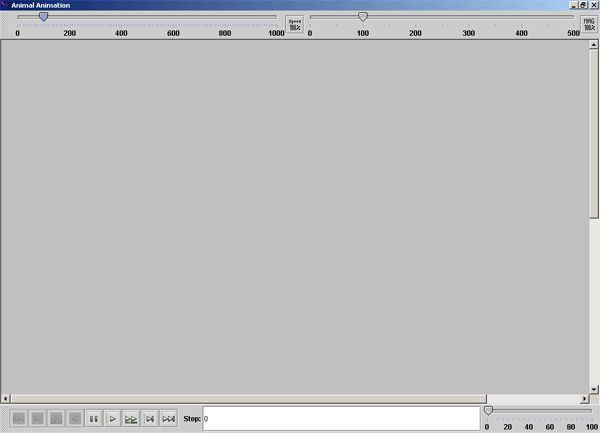

Vergrößert
bzw. verkleinert die Darstellungsgröße
Vergrößert
bzw. verkleinert die DarstellungsgrößeDie freie Animationssoftware ANIMAL kann Algorithmen veranschaulichen. ANIMAL ist eine Java-Applikation, die es erlaubt, die Einzelschritte von Algorithmen beliebig genau zu modellieren. Die Schrittfolgen können mit statischen Daten in einer AML-Datei abgelegt werden oder mit dynamischen Daten über AnimalScript definiert werden.
ANIMAL erlaubt, diese Schrittfolgen manuell vor und zurück durchzulaufen oder die gesamte Schrittfolge automatisch abzuspielen. Dabei haben Sie z.B. Optionen zur Geschwindigkeit und Darstellung in ANIMAL selbst.
Mit CrypTool wird ANIMAL 2 ausgeliefert (siehe Menü Einzelverfahren \ Visualisierung von Algorithmen). Da ANIMAL eine Java-Applikation ist, müssen Sie vorher eine Java Runtime-Umgebung installiert haben (mindestens in der Version 1.7), damit CrypTool das ANIMAL-Programm aufrufen kann (das Java Runtime Environment gibt es z.B. unter http://java.sun.com).
Die jeweils aktuelle Fassung von ANIMAL gibt es in Deutsch und Englisch unter http://www.algoanim.info/AnimalAV/. Dort gibt es auch eine große Sammlung freier Animationen von Algorithmen aus ganz verschiedenen Bereichen.
Wenn man ANIMAL lädt, werden zwei Fenster geöffnet:
Ist das Anzeigefenster nicht sichtbar, kann man es im Steuerfenster über das Menü "Bearbeiten \ Animationsfenster anzeigen" aufrufen.

Die Bedienung des ANIMAL-Anzeigefensters wird im folgenden beschrieben:
Regelt die Geschwindigkeit der Animation
Vergrößert
bzw. verkleinert die Darstellungsgröße
 Zum Anfang der Animation
Zum Anfang der Animation
 Zum vorherigen Schritt
Zum vorherigen Schritt
Animation als inverse Slideshow abspielen
Animationsschritt zurück
 Animation anhalten
Animation anhalten
 Ausführen des nächsten Schritts
Ausführen des nächsten Schritts
 Animation als Slideshow anzeigen
Animation als Slideshow anzeigen
 Gehe zum nächsten Schritt
Gehe zum nächsten Schritt
 Zum Ende der Animation
Zum Ende der Animation
 Zum Beenden der Animationen müssen sowohl das Animationsfenster als auch das
Programmfenster von Animal geschlossen werden.
Zum Beenden der Animationen müssen sowohl das Animationsfenster als auch das
Programmfenster von Animal geschlossen werden.